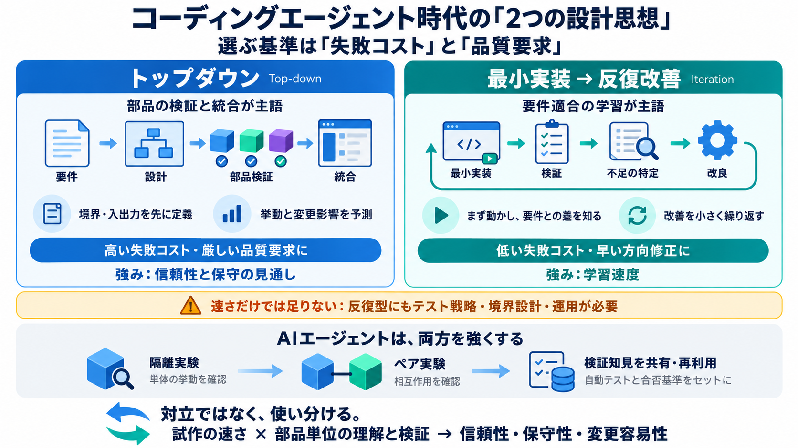

Research and Insights | CodeScene
Learn how CodeScene contributes to the software community through cutting-edge research and publications. # Echoes of A…

トップダウン（要件→部品設計→統合）と、最小実装反復（動く最小→改善）は、同じ目的でも前提が違う。どちらを選ぶべきかは「失敗コスト」と「品質要求」で決まる。
※バイリンガル表記：top-down（トップダウン）／iteration（反復改善）
設計アプローチは好みではない。失敗の損失（許容度）、必要な品質（信頼性）、そして保守の負担で最適解が入れ替わる。
トップダウンは、入出力と相互作用を先に設計し、部品を個別に検証して統合する。最小実装→反復改善は、要件を満たすか確認できる最小版から不足を特定し改善する。
トップダウンの価値は「挙動が理解され、検証が積み上がる」ことにある。結果として、全体の予測がしやすく、差し替え判断が合理的になる。
最小実装→反復改善は、完璧を最初から狙わず「要件ギャップ」を発見する。スタートアップのように方向修正が重要な場面で特に強い。
失敗が許されない領域では、学習のために“試す”ことが致命傷になり得る。部品ごとのストレステストや脆弱性排除など、トップダウン的検証の層が必要になる。
AIコーディングエージェントは「試して改善する」を実行しやすくする。だから後者（反復改善）が広がりやすい、という現状認識がある。
エージェントは反復を速めるだけでなく、部品理解や関係性マッピングを隔離・ペア実験で進められる。成果をMarkdown等で共有すれば、トップダウンの部品知見を資産化できる。
トップダウンは「部品の検証と統合」を主語にする。反復改善は「要件適合の学習」を主語にする。両者は競合ではなく、主語をどこに置くかの違いとして捉える。
主張は有益だが、そのまま鵜呑みにできない。反復型でも、テスト戦略・境界設計・運用プロセスを用意すれば保守性は確保できる。一方で、エージェントが出す知識には裏取り（評価指標）が必要だ。
意思決定は「失敗コスト」と「品質要求」から始める。さらにAIエージェントを使うなら、部品理解を隔離・ペア実験に落として、検証成果を再利用可能な形にする。
試作と反復のスピードを活かしつつ、最終的な信頼性・保守性・変更容易性を確保するには「部品単位の理解と検証」を核に据える。
Learn how CodeScene contributes to the software community through cutting-edge research and publications. # Echoes of A…
This rapid, non-protocol-registered systematic review of AI coding productivity examines 115 documents published from 1 …
Productivity gains are real, but adoption is still early. Among developers who use AI agents, 69% report increased produ…
AI coding agents are changing software engineering faster than most developers realize. We used to ask AI: "Write this f…
Set expectations: real enterprises rarely hit headline productivity boosts. Empirical telemetry data shows AI adoption i…